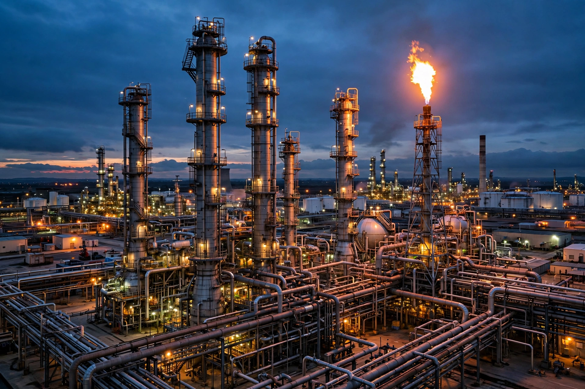

Petrochemical
Petrochemicals are chemical products derived from petroleum (crude oil) and natural gas. They form the feedstock base of much of the modern chemical industry, underpinning plastics, fertilisers, solvents, detergents, pharmaceuticals and synthetic fibres.

Primary petrochemicals
- Olefins — ethylene, propylene, butadiene (produced by steam cracking)
- Aromatics — benzene, toluene, xylenes (BTX, from catalytic reforming)
- Synthesis gas — carbon monoxide and hydrogen mixtures, basis for methanol and ammonia
Production
Petrochemical production begins at refineries and gas-processing plants, which supply feedstocks such as naphtha, ethane and LPG to steam crackers and reformers. The industry is concentrated in the US Gulf Coast, the Middle East, Northeast Asia and Northwest Europe. Demand growth has shifted from fuels toward chemicals as transport electrifies.
Environmental issues
The sector is a major source of industrial greenhouse-gas emissions and plastic waste concerns; decarbonisation options include electrified crackers, carbon capture, and chemical recycling of plastics.